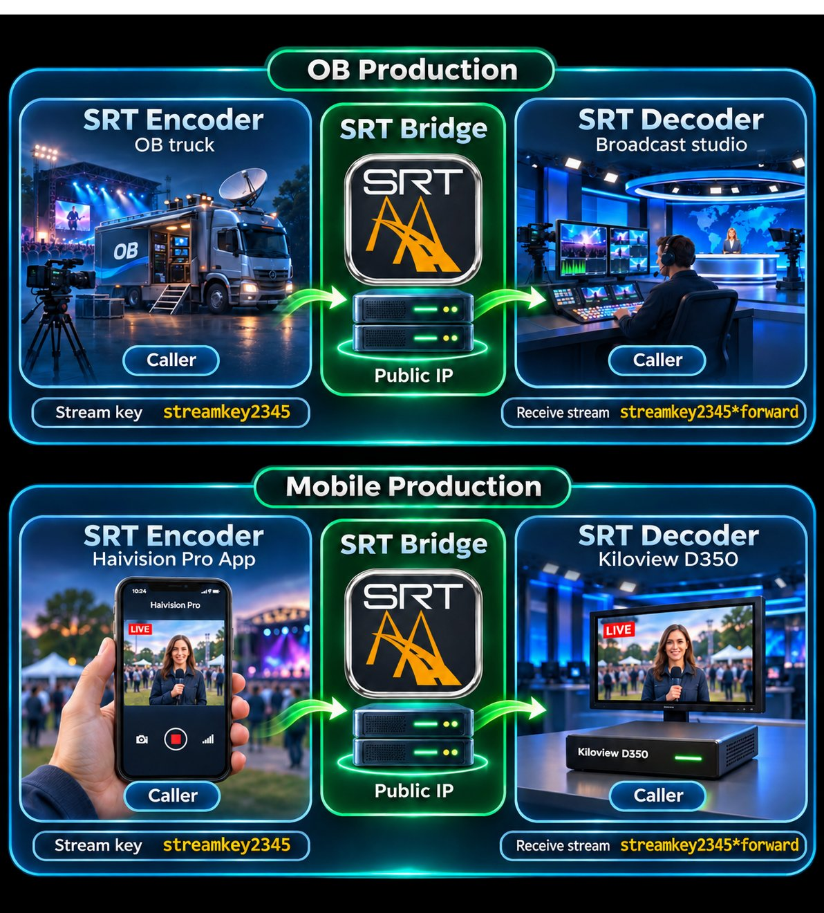

Turned away · connection attempts the bridge did not accept
Matrix · row = forward output, column = input · one input per row
Receivers · every device that fetches a signal
Bridge Output · decodes signals on this PC and sends them out as OMT, NDI or SDI
Outputs · one row per signal
SIGNAL = the bridge has an input on this signal. Choose an output and the signal is decoded and sent out under its output name; before it goes on air, Bridge Output checks that nobody on the network uses that name. On an SDI port the output follows the picture format of the signal; each port serves one signal.
Program
Sender key · stream ID the sender uses
–A new sender key disconnects the devices of that signal; they must use the new one.
Original
Receiver key · stream ID for the forward output
–With a receiver key, receivers do not need to know the sender key, and «sender key*forward» no longer works. A new key disconnects the receivers of that forward output.
What receivers use
Settings
SRT
WHIP input · one more signal, from OBS, a browser or FastVideo Bridge
Internet access
1 · Windows Firewall on this PC
2 · Port forwarding in the router
Forward UDP – to this PC: –. Only UDP is needed. This is set in the router, not here.
3 · Public IP for the links
The address of this site on the internet. It is offered in the Links window of every signal.
Windows
Shut down
Click twice. Windows shuts down after 20 seconds and closes every program, also over remote access; unsaved work in other programs is lost. «Cancel shutdown» stops it during these 20 seconds.
Remote access · this interface over HTTPS, from anywhere
On the first visit the browser warns that the connection is not secure: confirm it once to go on (see the orange text below).
Password
Address
–Certificate fingerprint (SHA-256): –
The bridge made this certificate itself, so the browser warns on the first visit. Compare the fingerprint in the browser (padlock or «Not secure» → certificate) with this one, then go on to the page.
API token for programs
–A program reads GET /api/state on the address above, once a second at most, with the header Authorization: Bearer and the token. A new token stops the old one at once.
Log · newest first

What SRT Bridge does
SRT Bridge is a meeting point on the internet for SRT signals. The encoder at the venue and the decoder in the studio both call the bridge; neither of them needs an open port or a fixed address. Only the PC with the bridge needs a public IP and one open UDP port.
The bridge passes the packets on unchanged. Nothing is decoded or encoded again, so the picture quality stays as it was sent and the delay is only the SRT latency on each leg.
The example in the picture
- The encoder (OB truck, or the Haivision Pro app on a phone) calls
srt://public IP:portwith the stream keystreamkey2345. It is now the input of a signal. - The decoder (studio, or a Kiloview D350) calls the same address with
streamkey2345*forwardand receives what the matrix assigns to that signal. - The Links button on every tile gives these addresses ready to copy, or as a QR code for a phone.
Keys
- Sender key: the stream ID the sender uses. An unknown key is turned away and listed under «Turned away», where one click gives it a free signal (Setup can let unknown keys take the next free signal instead).
- Receiver key (optional, page Generate key): its own stream ID for the receivers. Then they do not need to know the sender key, and
sender key*forwardno longer works. - Original: whoever knows the sender key can also receive the signal unchanged with it. On the Generate key page this can be switched off; then the sender key only sends.
- Passphrase (Edit window): encrypts the connection, separately for the sender side and for the forward output. 10 to 79 characters, empty = none. The key length (AES 128, 192 or 256 bit) is set by the caller, that is every device itself, encoder and decoder alike: the bridge is always the listener and takes the length the device asks for. Every connection is encrypted on its own, so an input without passphrase and a forward output with AES-256 work together.
The tiles
- LIVE · WAITING · FREE · OFF
- an input delivers data · a key is set but nothing comes in · no key · switched off (red tile)
- ✕ Off · Switch on
- switches the signal off: its sender and receivers are disconnected and turned away while they keep calling (a plain disconnect would not help: SRT devices call again at once). «Switch on» lets them in again
- Reset
- click twice: clears stream ID, name, passphrases and receiver key; the signal is free again. The matrix stays as it is
- bitrate
- what the input delivers now
- video · audio
- TV norm and codec, audio channels of all tracks together, read from the signal
- loss · drops
- in the last minute, so errors at the start go away by themselves; the totals since connecting are in the tooltip. Loss: lost on the way and sent again by SRT, nothing is missing. Drops: did not arrive in time, really missing in the picture
- RTT · latency
- round trip time to the sender · SRT latency of the connection
- on air · from
- time since the input went live, restarts · address of the sender
- error
- why a device was turned away in the last 10 seconds, for example «passphrase missing»
- original out
- devices that receive this signal unchanged with the sender key
- forward out
- which input the matrix gives to this forward output, and how many devices receive it
Matrix
Row = forward output, column = input. Every forward output gets one input; «all ↓» gives one input to all of them. Set it before the show: a change reconnects the receivers of that row once.
Setup
- One port for all signals (default): the stream ID says which signal a device means.
- One port per signal: signal 1 on the first port, signal 2 on the next, no stream ID needed. Whoever sends to a port is its input, whoever only listens there gets the matrix output. Sender and receiver keys do not exist in this mode.
- Latency: the lowest value the bridge accepts; a device that asks for more gets more.
- Set firewall rule (next to the port): after a new port, this opens it in the Windows Firewall. Windows asks for confirmation as administrator.
- Internet access: Windows Firewall rule, port forwarding (UDP only) in the router, public IP for the links.
WHIP input
- Switched on in Setup, it is one more signal after the last one, shown to the right of the tiles. A WHIP sender (OBS, a browser, FastVideo Bridge) publishes to
http://<this PC>:21102/whipwith the WHIP key as bearer token. One sender at a time; a new one takes over. - The picture (H.264 or H.265) is passed on unchanged. The sound comes as Opus, which many SRT receivers (vMix, Bridge Output) cannot play; it becomes AAC. That needs about 90–110 ms, shown as «sound delay»: the stream is timed so picture and sound stay together.
- Receivers fetch it with its stream ID; forward outputs get it through the Matrix (column WHIP). It has no forward output of its own.
- Port: TCP (WHIP) and UDP (media) on the same number. Open both in the firewall (Set firewall rule) and forward both in the router.
- lost · held: video packets lost for good · pictures held back until the next keyframe, so a broken picture is never passed on. A new receiver asks the sender for a keyframe.
SRT version
The bridge does not use the SRT library of Haivision (libsrt, today version 1.5.x) but gosrt 0.13.0 by datarhei, an SRT implementation written in Go. gosrt speaks the SRT protocol of version 1.4.1; that is the number shown at the top.
Devices with SRT 1.4.1 up to 1.5.x connect normally: both sides agree on the version they share. What is missing are features that came with 1.5: connection bonding (one signal over two lines at once) and AES-GCM encryption. Devices older than SRT 1.4.1 can be turned away.
Good to know
- Measured on the development laptop: about 800 Mbit/s going out in total over one port.
- This interface has no login; it is only reachable on this PC.
- The settings are kept in
%APPDATA%\SRTBridge\config.json, the log in%LOCALAPPDATA%\SRTBridge(the Log page shows both). A config.json next to the program keeps both there instead. - SRT Bridge Output, a separate program, shows the signals of this PC as OMT, NDI or SDI.